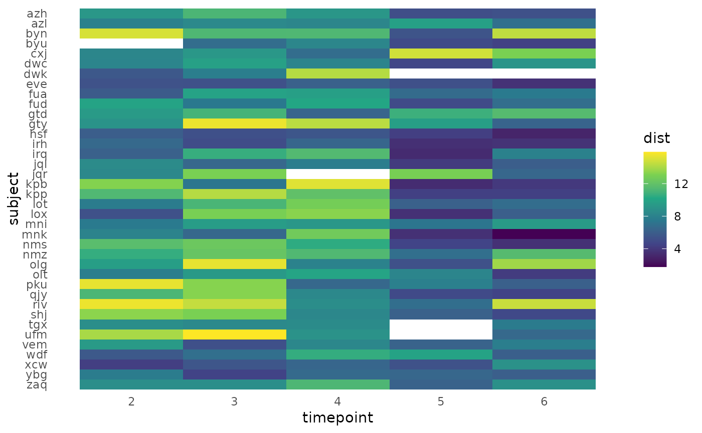

Calculate distances between sequential samples in ps_extra/phyloseq object
Source:R/dist_calc_seq.R
dist_calc_seq.RdCalculate distances between sequential samples in ps_extra/phyloseq object
dist_calc_seq(
data,
dist,
group,
seq,
unequal = "warn",
start_value = NaN,
return = "data",
var_name = paste0(dist, "_DistFromLast")
)Arguments
- data
psExtra object, e.g. output from tax_transform()
- dist
name of distance to calculate between pairs of sequential samples
- group
name of variable in phyloseq sample_data used to define groups of samples
- seq
name of variable in phyloseq sample_data used to define order of samples within groups
- unequal
"error" or "warn" or "ignore" if groups of samples, defined by group argument, are of unequal size
- start_value
value returned for the first sample in each group, which has no preceding sample in the group's sequence, and so has no obvious value
- return
format of return object: "data" returns psExtra with sorted samples and additional variable. "vector" returns only named vector of sequential distances.
- var_name
name of variable created in psExtra if return arg = "data"
Value
psExtra object sorted and with new sequential distance variable or a named vector of that variable
See also
Examples
library(ggplot2)
library(dplyr)
data("dietswap", package = "microbiome")
pseq <- dietswap %>%
tax_transform("identity", rank = "Genus") %>%
dist_calc_seq(
dist = "aitchison", group = "subject", seq = "timepoint",
# group sizes are unequal because some subjects are missing a timepoint
unequal = "ignore"
)
#> Warning: ps_split may drop different taxa per group with ps_filter
pseq %>%
samdat_tbl() %>%
dplyr::select(1, subject, timepoint, dplyr::last_col())
#> # A tibble: 222 × 4
#> .sample_name subject timepoint aitchison_DistFromLast
#> <chr> <fct> <int> <dbl>
#> 1 Sample-32 azh 1 NaN
#> 2 Sample-109 azh 2 9.27
#> 3 Sample-119 azh 3 11.2
#> 4 Sample-130 azh 4 9.19
#> 5 Sample-140 azh 5 5.12
#> 6 Sample-41 azh 6 5.30
#> 7 Sample-61 azl 1 NaN
#> 8 Sample-93 azl 2 7.99
#> 9 Sample-106 azl 3 8.44
#> 10 Sample-78 azl 4 8.24
#> # ℹ 212 more rows
# ggplot heatmap - unsorted
pseq %>%
samdat_tbl() %>%
filter(timepoint != 1) %>%
ggplot(aes(x = timepoint, y = subject)) +
geom_tile(aes(fill = aitchison_DistFromLast)) +
scale_fill_viridis_c(na.value = NA, name = "dist") +
theme_minimal(base_line_size = NA) +
scale_y_discrete(limits = rev(levels(samdat_tbl(pseq)$subject)))

# ComplexHeatmap plotting with clustering #
library(tidyr)
library(ComplexHeatmap)
# make data matrix
heatmat <- pseq %>%
samdat_tbl() %>%
filter(timepoint != 1) %>%
pivot_wider(
id_cols = subject,
names_from = timepoint, names_prefix = "t",
values_from = aitchison_DistFromLast
) %>%
tibble::column_to_rownames("subject")
heatmat <- as.matrix.data.frame(heatmat)
heatmap <- Heatmap(
name = "dist",
matrix = heatmat, col = viridisLite::viridis(12), na_col = "white",
cluster_columns = FALSE,
cluster_rows = hclust(dist(heatmat), method = "ward.D"),
width = unit(1.5, "in"), rect_gp = gpar(col = "black"),
row_names_side = "left", row_names_gp = gpar(fontsize = 8)
)
heatmap
 # comparison with subject tracking on PCA
pca <- pseq %>%
# already sorted data
dist_calc("aitchison") %>%
ord_calc("PCoA") %>%
ord_plot(alpha = 0.1, shape = "nationality", size = 2) %>%
add_paths(
mapping = aes(colour = subject, alpha = timepoint, size = timepoint),
id_var = "subject", id_values = c(
"eve", "hsf", # low variation
"vem", # medium
"ufm", # high variation
"pku" # starts high
)
) +
scale_alpha_continuous(range = c(0.3, 1), breaks = c(2, 4, 6)) +
scale_size_continuous(range = c(1, 2), breaks = c(2, 4, 6))
heatmap
# comparison with subject tracking on PCA
pca <- pseq %>%
# already sorted data
dist_calc("aitchison") %>%
ord_calc("PCoA") %>%
ord_plot(alpha = 0.1, shape = "nationality", size = 2) %>%
add_paths(
mapping = aes(colour = subject, alpha = timepoint, size = timepoint),
id_var = "subject", id_values = c(
"eve", "hsf", # low variation
"vem", # medium
"ufm", # high variation
"pku" # starts high
)
) +
scale_alpha_continuous(range = c(0.3, 1), breaks = c(2, 4, 6)) +
scale_size_continuous(range = c(1, 2), breaks = c(2, 4, 6))
heatmap
 pca
pca